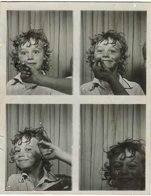

Found Photos
Some images below from the book ‘Found Photos’, first published 1978 and the revised edition 1980


Found Photos 1978 - 1980
Photolithographs and Varnish in frames 2015 (47 x 58 cm) framed

2007
from the work 'five time based photobooth portraits on DVD's
2012 (15 min)
DV frame grabs from approximately 1,200 images
Unclaimed Chemists Photos 1982
(Unclaimed Chemists Photos 1982)
2015 Photo Lithograph and Varnish
Framed (83 x 60cms)
(Unclaimed Chemists Photos 1982)
2015 Photo Lithograph and Varnish
Framed (100 x 56cms)
(Unclaimed Chemists Photos 1982)
2015 Photo Lithograph and Varnish
Framed (63 x 78cms)
(Unclaimed Chemists Photos 1982)
2015 Photo Lithograph and Varnish
Framed (68 x 94cms)